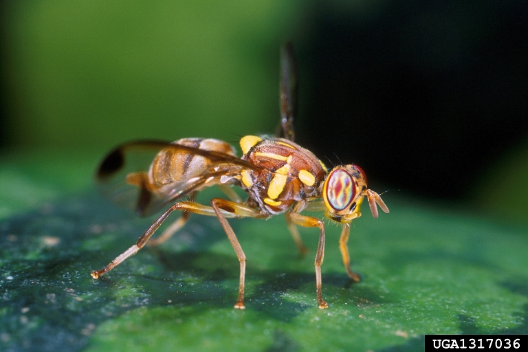
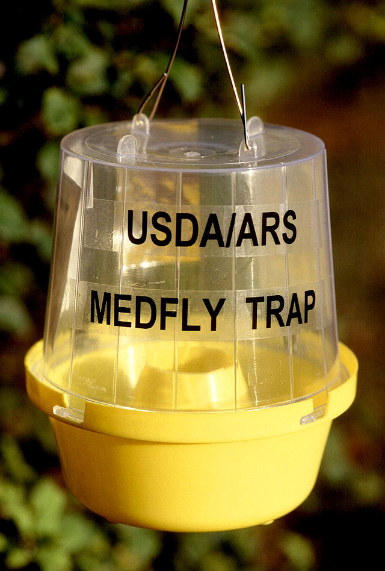

Kinh nghiệm phòng trừ ruồi vàng trên khổ qua
Khổ qua hái xoay vòng, cứ 2–3 bữa bà con lại cắt một lứa. Bởi vậy, phòng trừ ruồi đục trái phải tính cả lịch thu hoạch. Xịt thuốc tràn lan vừa tốn tiền, vừa khó bảo đảm thời gian cách ly.
Muốn giữ trái suôn đẹp và giảm hao hụt, bà con kết hợp nhận diện ruồi – đặt bẫy phù hợp – dọn trái bị hại – dùng thuốc theo nhãn.
1. Nhìn đúng ruồi, nhận biết trái bị chích
“Ruồi vàng” là tên gọi quen miệng của nhiều loài ruồi đục quả. Ruồi hại họ bầu bí có thể là Zeugodacus cucurbitae, còn gọi là Bactrocera cucurbitae. Bà con chụp rõ con ruồi và trái bị hại, nhờ cán bộ kỹ thuật nhận diện khi chưa chắc.
- Thăm trái: Chú ý chấm chích, vết đổi màu hoặc úng nước, trái thối và rụng sớm.
- Kiểm tra bên trong: Dòi có thể đang ăn trong thịt trái khi dấu hiệu ngoài vỏ còn ít. Phun lên vỏ cũng khó xử lý được trứng, dòi đã nằm trong trái.
Nguồn tham khảo về nhận diện và dấu hiệu gây hại. Biosecurity Queensland – Melon fly.

2. Đặt bẫy phù hợp với loài ruồi
Bẫy hiệu quả khi chọn đúng chất dẫn dụ. Cue-lure hấp dẫn ruồi đực hại bầu bí Z. cucurbitae; methyl eugenol dùng cho nhóm ruồi phương Đông. Bà con cần đối chiếu loài ruồi và nhãn chế phẩm trước khi mua.
- Chọn vị trí: Theo hướng dẫn của chế phẩm, ưu tiên nơi ruồi trú quanh rìa rẫy, có bóng râm vừa phải, thuận tiện kiểm tra.
- Chăm bẫy: Theo dõi số ruồi bắt được, thay mồi đúng nhãn và sau điều kiện thời tiết ảnh hưởng đến mồi. Số bẫy, lượng mồi và thời gian thay phụ thuộc từng sản phẩm.
- Bả protein: Có thể hấp dẫn ruồi tìm thức ăn, gồm cả ruồi đực và cái. Chọn chế phẩm phù hợp cây trồng, dùng đúng vị trí và cách xử lý ghi trên nhãn.
Nguồn về chất dẫn dụ, vị trí bẫy và bả protein. Đại học Hawaii CTAHR – Fruit flies.
Với long não gia dụng, hãy kiểm tra công dụng trên nhãn trước khi mang ra rẫy. NPIC cảnh báo các thành phần long não có thể gây ô nhiễm khi dùng ngoài trời.

3. Dùng thuốc gắn với lịch thu hoạch
Khi ruồi xuất hiện nhiều, bà con mang thông tin cây trồng, ảnh sâu hại và lịch hái đến cán bộ kỹ thuật hoặc đại lý để chọn sản phẩm phù hợp. Đọc nhãn về cây trồng, đối tượng phòng trừ, liều pha và thời gian cách ly trước khi sử dụng.
- Tính ngày hái: Bảo đảm đủ thời gian cách ly tính từ lần xử lý cuối. Hái cách vài ngày vẫn phải chờ đủ số ngày quy định trên nhãn.
- Pha đúng lượng: Ghi liều, diện tích và lượng nước thực tế; có thể dùng công cụ Tính lượng thuốc để quy đổi liều theo lượng nước.
- Chọn lúc xử lý: Theo thời tiết, hoạt động ruồi quan sát tại rẫy và hướng dẫn sản phẩm. Với bả, xử lý đúng điểm chỉ định trên nhãn.
- Ghi chép: Lưu tên thuốc, hoạt chất, ngày xử lý và ngày được phép hái; trao đổi cách luân phiên nhóm tác động với người có chuyên môn.
Nguồn về đọc nhãn, lượng thuốc và thời gian cách ly. Chi cục Trồng trọt và Bảo vệ thực vật TP.HCM.

4. Dọn sạch trái bị hại và theo dõi rẫy
Thấy trái vàng bất thường, thối hoặc rụng dưới gốc, bà con gom sớm vào túi dày và buộc kín để dòi không thoát ra đất. Chọn cách tiêu hủy được cán bộ kỹ thuật địa phương hướng dẫn; tránh vứt trái xuống mương, đầu bờ hay để thành đống cạnh rẫy.
Sau mỗi đợt hái, kiểm tra cả trái còn trên giàn và trái loại bỏ. Kết hợp dọn tàn dư, theo dõi bẫy và trao đổi với các rẫy lân cận để giảm nguồn ruồi quay lại.
Nguồn về thu gom trái và vệ sinh đồng ruộng. Đại học Hawaii CTAHR; Cơ quan Bảo vệ thực vật Nhật Bản.

Chúc bà con giữ giàn khỏe, giảm trái bị hại và thu hoạch đều tay.